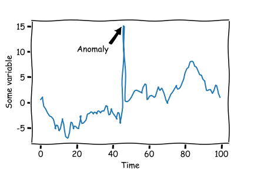

Hello there! My name is Rami Abou-Shamalah.
I've been in Data-centric roles since 2021, Currently working as a Data Scientist.
This site showcases my credibility as a Data Scientist and to blog about things I find meaningful and related.
Portfolio Projects:

Predicting Quebec's Mineral Deposits with AI
2025-01-25Powered by deep learning, Find prospective mineralization in Quebec.

Automating Tasks: Saving Time & Money
2023-07-15At Sander Geophysics, Using Neural Nets to predict anamaolies in time series data. This solution increased accuracy, reduced operational costs, and fully automated the task.
Laundry Service Analytics Dashboard
2024-03-19Interactive data visualization dashboard for a laundry service business showing revenue analytics, customer metrics, and performance statistics.